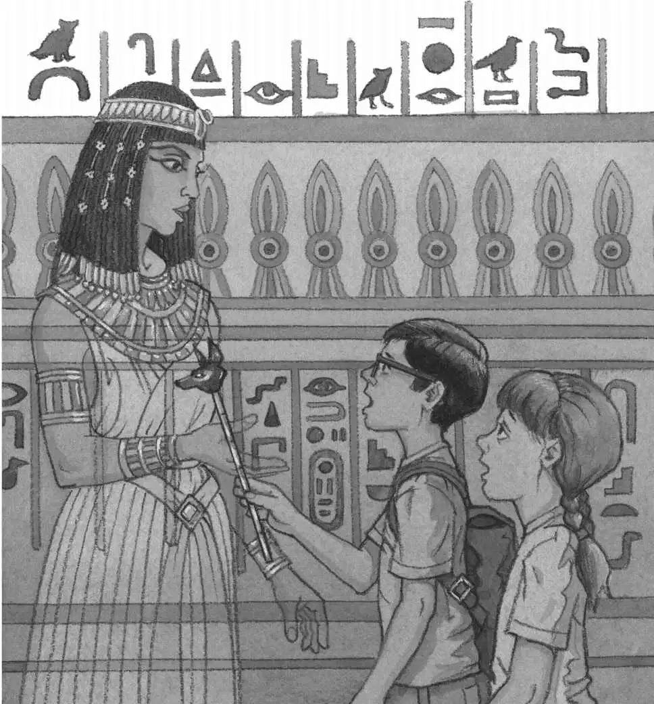

Jack pulled Annie down.
The white figure moved swiftly past them, then disappeared into the shadows.
“A mummy,” said Annie. “Back from the dead!”
“F-forget it,” stammered Jack. “That’s impossible.” He picked up the Egypt book.
“What’s this?” said Annie. She lifted something from the floor. “Look. The mummy dropped this thing.”
It was a gold stick about a foot long. A dog’s head was carved on one end.
“It looks like a scepter,” said Jack.
“What’s that?” asked Annie.
“It’s a thing kings and queens carry,” said Jack. “It means they have power over the people.”
“Come back, mummy!” Annie called. “We found your scepter. Come back! We want to help you!”
“Shush!” said Jack. “Are you nuts?”
“But the mummy—”
“That was no mummy,” said Jack. “It was a person. A real person.”
“What kind of person would be inside a pyramid?” asked Annie.
“I don’t know,” said Jack. “Maybe the book can help us.”
He flipped through the book. At last he found a picture of a person in a pyramid. He read:
Tomb robbers often stole the treasure buried with mummies. False passages were sometimes built to stop the robbers.
Jack closed the book. “Not a mummy,” he said. “Just a tomb robber.”
“Yikes. A tomb robber?” said Annie.
“Yeah, a robber who steals stuff from tombs,” said Jack.
“What if the robber comes back?” said Annie. “We’d better leave.”
“Right,” said Jack. “But first I want to write something down.”
He put the Egypt book into his pack. He pulled out his notebook and pencil.
He started writing in his notebook:
tomb robber
“Jack—” said Annie.
“Just a second,” said Jack. He kept writing:
tomb robber tried to steal
“Jack! Look!” said Annie.
Jack felt a whoosh of cold air. He looked up. A wave of terror shot through him.
Another figure was moving slowly toward them.
It wasn’t a tomb robber. It was a lady. A beautiful Egyptian lady.
The lady wore flowers in her black hair. Her long white dress had many tiny pleats. Her gold jewelry glittered.
“Here, Jack,” Annie whispered. “Give her this.” She handed him the gold scepter.
The Egyptian lady stopped in front of them.
Jack held out the scepter. His hand was trembling.
He gasped. The scepter passed right through the lady’s hand.
She was made of air.
